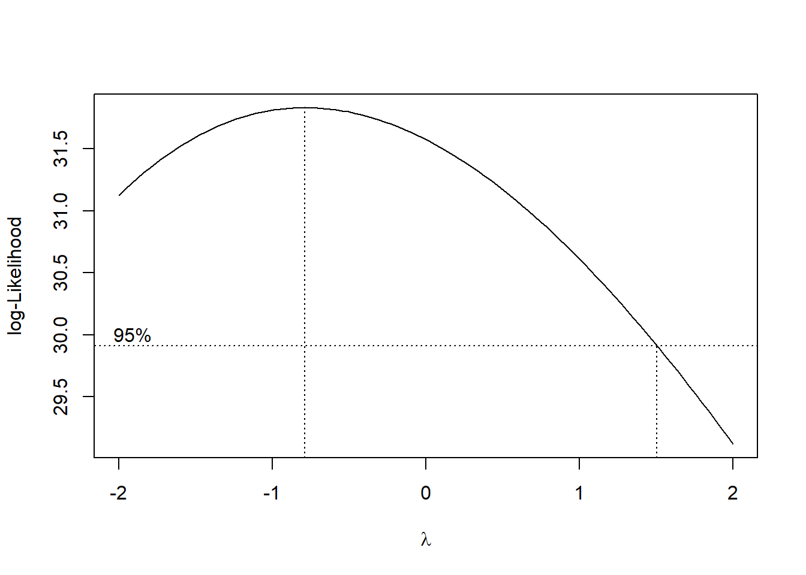
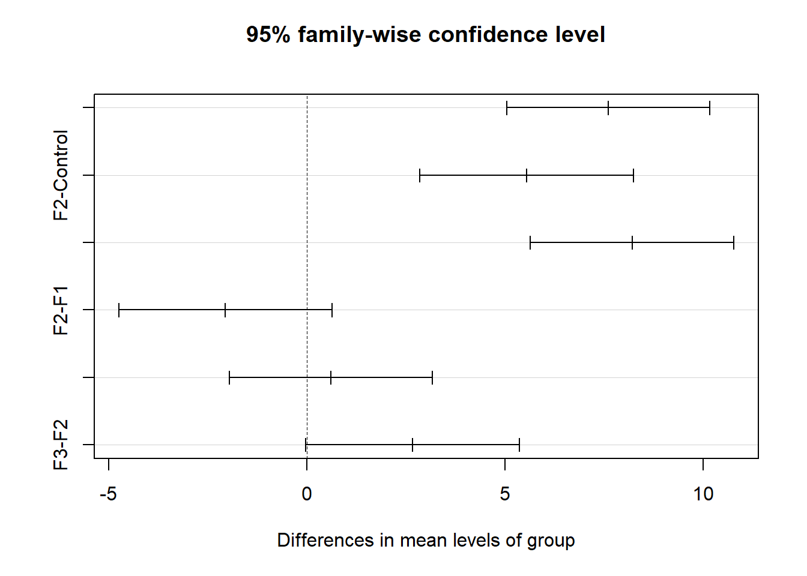
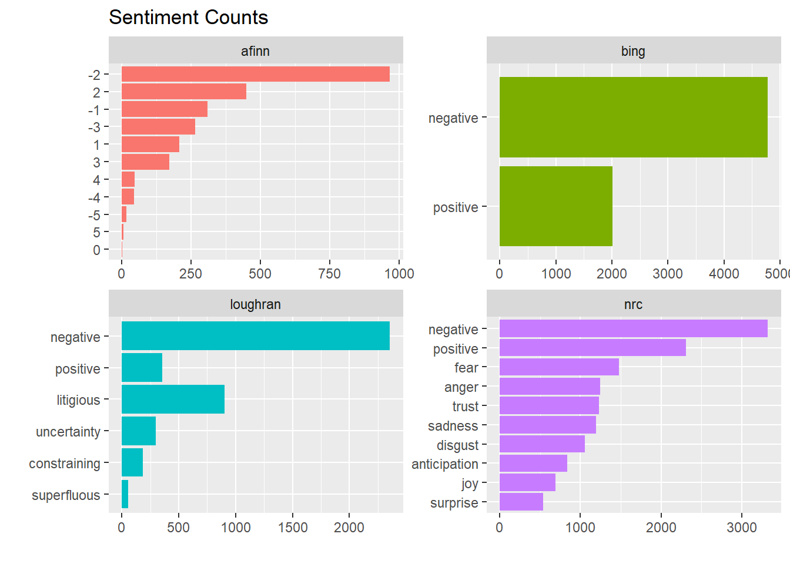
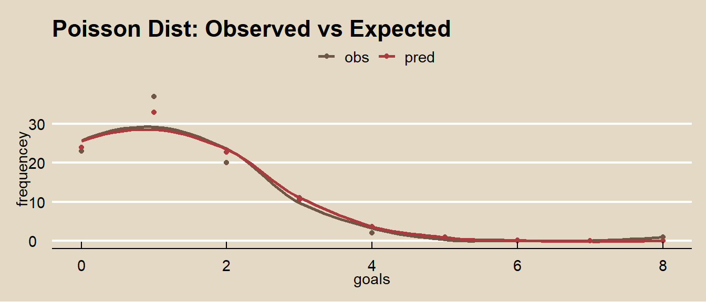

1.2 Discrete Distributions
These notes rely heavily on PSU STATS 504 course notes.
The most important discrete distributions are the Binomial, Poisson, and Multinomial. Sometimes useful are the related Bernoulli, negative binomial, geometric, and hypergeometric distributions.
A discrete random variable \(X\) is described by its probability mass function \(f(x) = P(X = x)\). The set of \(x\) values for which \(f(x) > 0\) is called the support. If the distribution depends on unknown parameter(s) \(\theta\) we write it as \(f(x; \theta)\) (frequentist) or \(f(x | \theta)\) (Bayesian).
1.2.1 Bernoulli
If \(X\) is the result of a trial with two outcomes of probability \(P(X = 1) = \pi\) and \(P(X = 0) = 1 - \pi\), then \(X\) is a random variable with a Bernoulli distribution
\[f(x) = \pi^x (1 - \pi)^{1 - x}, \hspace{1cm} x \in (0, 1)\]
with \(E(X) = \pi\) and \(V(X) = \pi(1 - \pi)\).
1.2.2 Binomial
If \(X\) is the count of successful events in \(n\) identical and independent Bernoulli trials of success probability \(\pi\), then \(X\) is a random variable with a binomial distribution \(X \sim Bin(n,\pi)\)
\[f(x;\pi) = \frac{n!}{x!(n-x)!} \pi^x (1-\pi)^{n-x} \hspace{1cm} x \in (0, 1, ..., n), \hspace{2mm} \pi \in [0, 1]\]
with \(E(X)=n\pi\) and \(V(X) = n\pi(1-\pi)\).
The Bernoulli distribution is a special case of the binomial with \(n = 1\). As n increases for fixed \(\pi\), the binomial distribution approaches normal distribution \(N(n\pi, n\pi(1−\pi))\). The binomial distribution assumes independent trials - if sampling without replacement from a finite population, then the hypergeometric distribution is appropriate.
Example
What is the probability 2 out of 10 coin flips are heads if the probability of heads is 0.3?
Function dbinom() calculates the binomial probability.
## [1] 0.2334744A simulation of n = 10,000 random samples of size 10 gives a similar result. rbinom() generates a random sample of numbers from the binomial distribution.
data.frame(cnt = rbinom(n = 10000, size = 10, prob = 0.3)) %>%
count(cnt) %>%
ungroup() %>%
mutate(pct = n / sum(n),
X_eq_x = cnt == 2) %>%
ggplot(aes(x = as.factor(cnt), y = n, fill = X_eq_x, label = pct)) +
geom_col(alpha = 0.8) +
scale_fill_mf() +
geom_label(aes(label = round(pct, 2)), size = 3, alpha = .6) +
theme_mf() +
theme(legend.position = "none") +
labs(title = "Binomial Distribution",
subtitle = paste0(
"P(X=2) successes in 10 trials when p = 0.3 is ",
round(dbinom(2, 10, 0.3), 4), "."
),
x = "Successes",
y = "Count",
caption = "Simulation from n = 10,000 binomial random samples.") 
Example
What is the probability of <=2 heads in 10 coin flips where probability of heads is 0.3?
The cumulative probability is the sum of the first three bars in the simulation above. Function pbinom() calculates the cumulative binomial probability.
## [1] 0.3827828Example
What is the expected number of heads in 25 coin flips if the probability of heads is 0.3?
The expected value, \(\mu = np\), is 7.5. Here’s an empirical test from 10,000 samples.
## [1] 7.526The variance, \(\sigma^2 = np (1 - p)\), is 5.25. Here’s an empirical test.
## [1] 5.217501Example
Suppose X and Y are independent random variables distributed \(X \sim Bin(10, .6)\) and \(Y \sim Bin(10, .7)\). What is the probability that either variable is <=4?
Let \(P(A) = P(X<=4)\) and \(P(B) = P(Y<=4)\). Then \(P(A|B) = P(A) + P(B) - P(AB)\), and because the events are independent, \(P(AB) = P(A)P(B)\).
p_a <- pbinom(q = 4, size = 10, prob = 0.6, lower.tail = TRUE)
p_b <- pbinom(q = 4, size = 10, prob = 0.7, lower.tail = TRUE)
p_a + p_b - (p_a * p_b)## [1] 0.2057164Here’s an empirical test.
df <- data.frame(
x = rbinom(10000, 10, 0.6),
y = rbinom(10000, 10, 0.7)
)
mean(if_else(df$x <= 4 | df$y <= 4, 1, 0))## [1] 0.19721.2.3 Poission
If \(X\) is the number of successes in \(n\) (many) trials when the probability of success \(\lambda / n\) is small, then \(X\) is a random variable with a Poisson distribution \(X \sim Poisson(\lambda)\)
\[f(x;\lambda) = \frac{e^{-\lambda} \lambda^x}{x!} \hspace{1cm} x \in (0, 1, ...), \hspace{2mm} \lambda > 0\]
with \(E(X)=\lambda\) and \(V(X) = \lambda\).
\(Poison(\lambda) \rightarrow Bin(n, \pi)\) when \(n\pi = \lambda\) and \(n \rightarrow \infty\) and \(\pi \rightarrow 0\). Because the Poisson is limit of the \(Bin(n, \pi)\), it is useful as an approximation to the binomial when \(n\) is large (\(n>=20\)) and \(\pi\) small (\(p<=0.05\)).
When the observed variance is greater than \(\lambda\) (overdispersion), the Negative Binomial distribution can be used instead of Poisson.
Example
What is the probability of making 2 to 4 sales in a week if the average sales rate is 3 per week?
Function dpois() calculates the binomial probability.
# Using cumulative probability
ppois(q = 4, lambda = 3, lower.tail = TRUE) -
ppois(q = 1, lambda = 3, lower.tail = TRUE)## [1] 0.616115# Using exact probability
dpois(x = 2, lambda = 3) +
dpois(x = 3, lambda = 3) +
dpois(x = 4, lambda = 4)## [1] 0.6434504
Example
Suppose a baseball player has a p=.300 batting average. What is the probability of X<=150 hits in n=500 at bats? X=150? X>150?
## [1] 0.52## [1] 0.033## [1] 0.48The Poisson distribution approximates the binomial distribution with \(\lambda=np\) if \(n>=20\) and \(p<=0.05\).
Example
What is the distribution of successes from a sample of n = 50 when the probability of success is p = .03?
options(scipen = 999, digits = 2) # sig digits
n = 0:10
df <- data.frame(events = 0:10,
Poisson = dpois(x = n, lambda = .03 * 50),
Binomial = dbinom(x = n, size = 50, p = .03))
df_tidy <- gather(df, key = "Distribution", value = "density", -c(events))
ggplot(df_tidy, aes(x = factor(events), y = density, fill = Distribution)) +
geom_col(position = "dodge") +
theme_mf() +
scale_fill_mf() +
labs(title = "Poisson(15) and Binomial(50, .03)",
subtitle = "Poisson approximates binomial when n >= 20 and p <= .05.",
x = "Events (x)",
y = "Density",
fill = "")
Example
Suppose the probability that a drug produces a certain side effect is p = = 0.1% and n = 1,000 patients in a clinical trial receive the drug. What is the probability 0 people experience the side effect?
The expected value is np, 1. The probability of measuring 0 when the expected value is 1 is dpois(x = 0, lambda = 1000 * .001) = 0.37.

1.2.4 Multinomial
If \(X = (X_1, X_2, \cdots, X_k)\) are the counts of successful events in \(n\) identical and independent trials of success probabilities \(\pi = (\pi_1, \pi_2, \cdots, \pi_k)\), then \(X\) is a random variable with a multinomial distribution \(X \sim Mult(n,\pi)\)
\[f(x;\pi) = \frac{n!}{x_{1}! x_{2}! \cdots x_{k}!} \pi^{x_1} \pi^{x_2} \cdots \pi^{x_k} \hspace{1cm} x \in \{0, 1, ..., n \}, \hspace{2mm} \pi \in [0, 1]\]
with \(E(X)=n\pi = (n \pi_1 + n \pi_2 + \cdots + n \pi_k)\) and covariance matrix
\[V(X) = \begin{bmatrix}n\pi_{1}(1-\pi_{1}) & -n\pi_{1}\pi_{2} & \cdots & -n\pi_{1}\pi_{k}\\ -n\pi_{1}\pi_{2} & n\pi_{2}(1-\pi_{2}) & \cdots & -n\pi_{2}\pi_{k}\\ \vdots & \vdots & \ddots & \vdots\\ -n\pi_{1}\pi_{k} & -n\pi_{2}\pi_{k} & \cdots & n\pi_{k}(1-\pi_{k}) \end{bmatrix}\]
The individual components of a multinomial random vector are binomial and have a binomial distribution, \(X_i = Bin(n, \pi_i)\).
Example
Suppose a city population is 20% black, 15% Hispanic, and 65% other. From a random sample of \(n = 12\) persons, what is the probability of 4 black and 8 other?
\[f(x;\pi) = \frac{12!}{4! 0! 8!} (0.20)^4 (0.15)^0 (0.65)^8 = 0.0252\]
Function dmultinom() calculates the multinomial probability.
## [1] 0.025To calculate the probability of <= 1 black, combine Hispanic and other, then sum the probability of black = 1 and black = 2.
\[f(x;\pi) = \frac{12!}{0! 12!} (0.20)^0 (0.80)^{12} + \frac{12!}{1! 11!} (0.20)^1 (0.80)^{11} = 0.2748\]
## [1] 0.271.2.5 Negative-Binomial
If \(X\) is the count of failure events ocurring prior to reaching \(r\) successful events in a sequence of Bernouli trias of success probability \(p\), then \(X\) is a random variable with a negative-binomial distribution \(X \sim NB(r, p)\). The probability of \(X = x\) failures prior to \(r\) successes is
\[f(x;r, p) = {{x + r - 1} \choose {r - 1}} p^r (1-p)^{x}.\]
with \(E(X) = r (1 - p) / p\) and \(V(X) = r (1-p) / p^2\).
When the data has overdispersion, model the data with the negative-binomial distribution instead of Poission.
Examples
An oil company has a \(p = 0.20\) chance of striking oil when drilling a well. What is the probability the company drills \(x + r = 7\) wells to strike oil \(r = 3\) times? Note that the question is formulated as counting total events, \(x + r = 7\), so translate it to total failed events, \(x = 4\).
\[f(x;r, p) = {{4 + 3 - 1} \choose {3 - 1}} (0.20)^3 (1 - 0.20)^4 = 0.049.\]
Function dnbinom() calculates the negative-binomial probability. Parameter x equals the number of failures, \(x - r\).
## [1] 0.049The expected number of failures prior to 3 successes is \(E(X) = 3 (1 - 0.20) / 0.20 = 12\) with variance \(V(X) = 3 (1 - 0.20) / 0.20^2 = 60\). Confirm this with a simulation from n = 10,000 random samples using rnbinom().
## [1] 12## [1] 59
1.2.6 Geometric
If \(X\) is the count of independent Bernoulli trials of success probability \(p\) required to achieve the first successful trial, then \(X\) is a random variable with a geometric distribution \(X \sim G(p)\). The probability of \(X=x\) trials is
\[f(x; p) = p(1-p)^{x-1}.\]
with \(E(X)=\frac{{n}}{{p}}\) and \(V(X) = \frac{(1-p)}{p^2}\). The probability of \(X<=n\) trials is
\[F(X=n) = 1 - (1-p)^n.\]
Example
What is the probability a marketer encounters x = 3 people on the street who did not attend a sporting event before the first success if the population probability is p = 0.20?
\[f(4; 0.20) = 0.20(1-0.20)^{4-1} = 0.102.\]
Function pgeom() calculates the geometric distribution probability. Parameter x is the number of failures, not the number of trials.
## [1] 0.1data.frame(cnt = rgeom(n = 10000, prob = 0.20)) %>%
count(cnt) %>%
top_n(n = 15, wt = n) %>%
ungroup() %>%
mutate(pct = round(n / sum(n), 3),
X_eq_x = cnt == 3) %>%
ggplot(aes(x = as.factor(cnt), y = n, fill = X_eq_x, label = pct)) +
geom_col(alpha = 0.8) +
scale_fill_mf() +
geom_text(size = 3) +
theme_mf() +
theme(legend.position = "none") +
labs(title = "Distribution of trials prior to first success",
subtitle = paste("P(X = 3) | X ~ G(.2) = ", round(dgeom(2, .2), 3)),
x = "Unsuccessful trials",
y = "Count",
caption = "simulation of n = 10,000 samples from geometric dist.") 
What is the probability the marketer fails to find someone who attended a game in x <= 5 trials before finding someone who attended a game on the sixth trial when the population probability is p = 0.20?
## [1] 0.74## [1] 0.74
What is the probability the marketer fails to find someone who attended a game on x >= 5 trials before finding someone who attended a game on the next trial?
## [1] 0.26## [1] 0.27
The expected number of trials to achieve the first success is 1 / 0.20 = 5, V(X) = (1 - 0.20) / 0.20^2 = 20?
## [1] 5## [1] 5## [1] 20## [1] 201.2.7 Hypergeometric
If \(X\) is the count of successful events in a sample sof size \(k\) without replacement from a population containing \(M\) successes and \(N\) non-successes, then \(X\) is a random variable with a hypergeometric distribution
\[f(x|m,n,k) = \frac{{{m}\choose{x}}{{n}\choose{k-x}}}{{m+n}\choose{k}}.\]
with \(E(X)=k\frac{m}{m+n}\) and \(V(X) = k\frac{m}{m+n}\cdot\frac{m+n-k}{m+n}\cdot\frac{n}{m+n-1}\).
phyper returns the cumulative probability (percentile) p at the specified value (quantile) q. qhyper returns the value (quantile) q at the specified cumulative probability (percentile) p.
Example
What is the probability of selecting \(X = 14\) red marbles from a sample of \(k = 20\) taken from an urn containing \(m = 70\) red marbles and \(n = 30\) green marbles?
Function dhyper() calculates the hypergeometric probability.
## [1] 0.21The expected value is 14 and variance is 3.39.

The hypergeometric random variable is similar to the binomial random variable except that it applies to situations of sampling without replacement from a small population. As the population size increases, sampling without replacement converges to sampling with replacement, and the hypergeometric distribution converges to the binomial. What if the total population size is 250? 500? 1000?